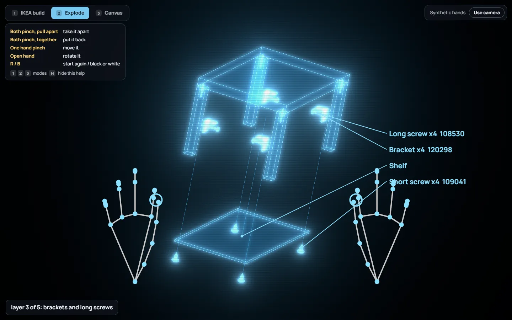

Hands 3D
Webcam hand tracking in the browser: put an IKEA LACK table together with your bare hands, pull it apart into a hologram, or draw in the air.
- Role
- Personal project
- Runs
- In the browser and as a Windows app
- Input
- Any webcam, or the mouse
- Stack
- three.js
- MediaPipe
- TypeScript
- Vite
- Node single executable

Why
It started as one mode of my Hand Gestures desktop app and outgrew it. I wanted to see how far a plain webcam can go as a 3D input device, with no gloves and no depth camera.
Three modes
- Build: the loose pieces lie in a row and a green shape shows where each one goes. Bring a piece there and it snaps in, through the manual's eight steps, with the manual page beside you.
- Explode: pinch with both hands and pull to take the table apart layer by layer, push together to put it back. Each part shows its real part number.
- Canvas: draw in the air with your index finger, or load a 3D file and move, turn and resize it with pinches.
- No webcam? A mouse mode does the same with clicks.
Under the hood
- Tracking
- MediaPipe hand landmarks through the open-source-hands kit, smoothed every frame
- 3D
- three.js scenes per mode; pieces snap by type, so any piece fits any free place of its kind
- Data
- Part shapes and manual pages from Stanford's IKEA-Manual research dataset (102 products). It has no licence, so it's never bundled: a setup script downloads it on the user's own machine
- Desktop
- A 140 MB Windows exe (a Node single executable) that serves the app locally and opens it in its own window; a headless check drives the built exe